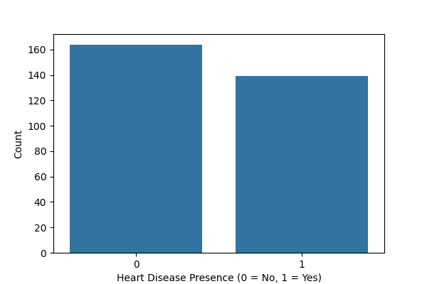
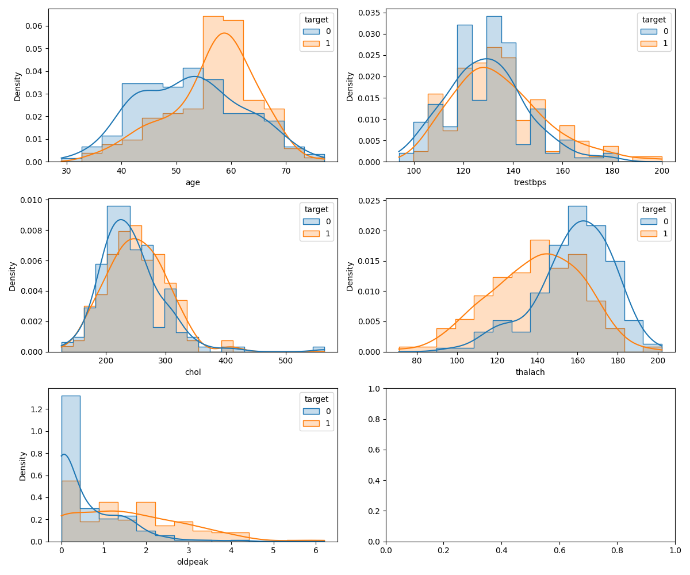

Exploratory Data Analysis (EDA) — Heart Disease UCI¶
This document captures the complete EDA process used in this project.
Primary EDA source:
- Notebook:
exploration/eda.ipynb - Generated figures:
doc/images/
1. Objective and Approach¶
Goal: Understand the Heart Disease UCI dataset’s structure, target definition, missingness, feature distributions, and relationships so we can design a robust preprocessing + modeling pipeline.
Key EDA outputs (as required):
- Target/class balance visualization
- Feature distribution plots (categorical and numerical)
- Correlation heatmap
- Basic statistical association check for categorical features
2. Dataset Acquisition¶
Two equivalent ways are supported in this repo:
-
Reproducible download script (recommended for pipelines):
-
Script:
download_data.py - Output:
data/raw/heart_disease_raw.csv
Run:
python download_data.py
This script downloads the data from the url https://archive.ics.uci.edu/static/public/45/data.csv. This is the 45th version of the data.
- Direct CSV read (used inside the EDA notebook):
The notebook loads from:
- https://archive.ics.uci.edu/static/public/45/data.csv
3. Data Description (Features + Target)¶
The dataset contains the commonly used 14 attributes (UCI Heart Disease):
age: age (years)sex: 1=male, 0=femalecp: chest pain type (1–4)trestbps: resting blood pressure (mm Hg)chol: serum cholesterol (mg/dl)fbs: fasting blood sugar > 120 mg/dl (1=true, 0=false)restecg: resting ECG results (0–2)thalach: max heart rate achievedexang: exercise induced angina (1=yes, 0=no)oldpeak: ST depression induced by exercise relative to restslope: slope of peak exercise ST segment (1–3)ca: number of major vessels (0–3)thal: thalassemia indicator (commonly 3, 6, 7)num: original diagnosis label (0–4)
Target definition used in this project¶
The original num is multi-valued (0,1,2,3,4). To make this a binary classification problem:
target = 0ifnum == 0(absence of disease)target = 1ifnum != 0(presence of disease)
After deriving target, the notebook drops num to avoid leakage and ambiguity.
4. Basic Data Quality Checks¶
The notebook performs initial inspection via:
df.info()for dtypes and non-null countsdf.describe()for numeric summary statistics
Missing values¶
During inspection, two columns stand out as having missing values:
cathal
These are treated as categorical in analysis (even though they are encoded numerically) and are typically handled via mode/most-frequent imputation during preprocessing.
Note: for the Chi-square test in the notebook, missing rows are excluded using dropna() to keep the statistical test well-defined.
5. Class Balance (Target Distribution)¶
To validate the problem setup and understand potential imbalance, the notebook plots a countplot of target.

Interpretation (as observed in the notebook):
- The dataset is not extremely imbalanced, but class proportions should still be verified before choosing metrics and thresholds.
6. Feature-Type Grouping for EDA¶
For analysis, features are grouped into categorical vs numerical:
Categorical (discrete, encoded) columns:
sex, cp, fbs, restecg, exang, slope, ca, thal
Numerical (continuous/ordinal) columns:
age, trestbps, chol, thalach, oldpeak
This grouping drives the choice of plots and informs later preprocessing decisions (encoding and scaling).
7. Univariate Analysis (Distributions)¶
7.1 Categorical feature distributions by target¶
The notebook generates countplots for each categorical feature with hue="target" to compare category frequencies across the two classes.

Typical EDA takeaways from these plots:
- Some categorical features show visibly different distributions between
target=0andtarget=1, which suggests predictive signal. - Some categories are dominant within a feature (rare categories exist), which is important for encoding choices and potential regularization.
7.2 Numerical feature distributions by target¶
The notebook uses histogram + KDE overlays (sns.histplot(..., kde=True)) split by target.

Notebook observation captured in comments:
- Most numerical variables appear roughly bell-shaped except
oldpeak, which is more skewed.
Implication for modeling (preprocessing decision driver):
- Standardization is generally suitable for most continuous features.
- Skewed features can sometimes benefit from alternative scaling (e.g., MinMax/robust scaling) or transformations, to be validated during model development.
8. Correlation Analysis¶
To identify linear relationships and potential multicollinearity, the notebook computes a correlation matrix and visualizes it using a heatmap (values shown as percentages).

Notebook conclusion:
- No pair of features exhibits extremely high correlation that would force removal purely due to multicollinearity concerns.
- Therefore, all features are retained for downstream model training (feature selection is deferred to modeling/validation).
9. Statistical Association for Categorical Features (Chi-square Test)¶
To quantify whether categorical features are associated with the target, the notebook runs a Chi-square test (sklearn.feature_selection.chi2) on the categorical subset (after dropping missing rows).
Result interpretation recorded in the notebook:
- Most categorical variables show statistically significant association with the target (p-value < 0.05).
fbsis not significant in isolation (very high p-value), but is still retained because:- features can contribute jointly even if marginal association is weak
- final decision should be made using cross-validated model performance
10. Reproducibility: How to Regenerate EDA Outputs¶
From a clean environment:
-
Run the notebook end-to-end:
-
Open:
exploration/eda.ipynb - Run all cells
- Figures are saved to:
doc/images/
Optional: a lightweight script also exists for quick checks:
src/eda.pyprints basic info and writes plots intologs/.
11. EDA Artifacts (for Report / Submission)¶
The notebook saves the following figures (submission-ready):
doc/images/heart_disease_target_distribution.pngdoc/images/heart_disease_categorical_distribution.pngdoc/images/heart_disease_numerical_distribution.pngdoc/images/heart_disease_correlation_matrix.png